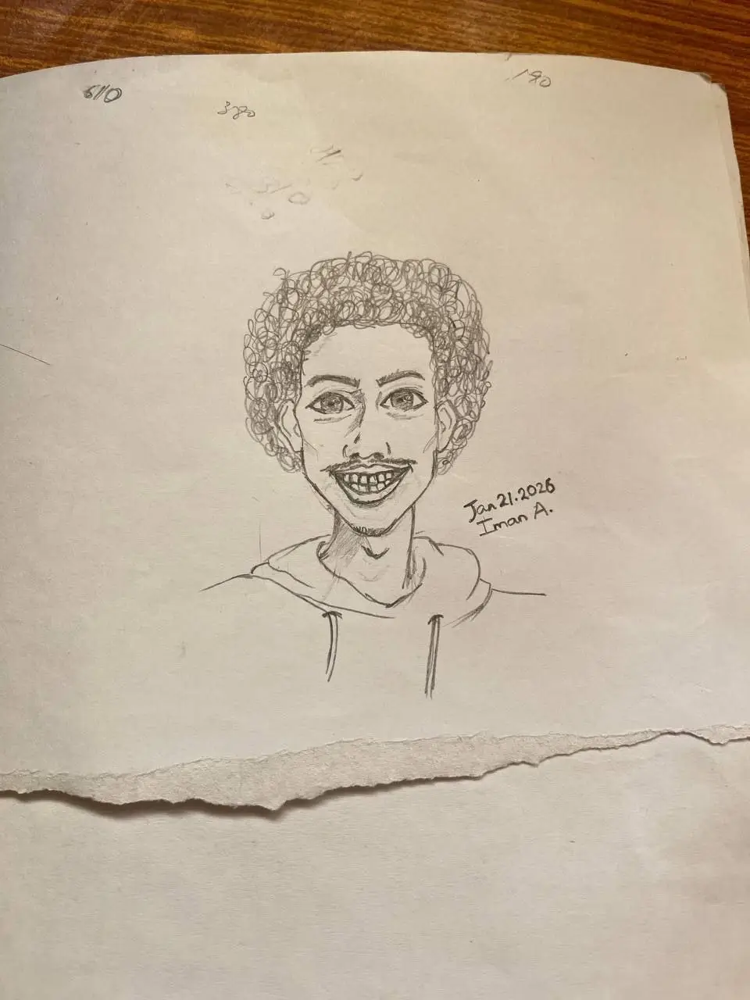

Hello there :D
As you probably could tell from the website's name, My name is Yordanos. It's an Amharic name for the name 'Jordan'. This site is where I document myself trying (and often failing) to make games.

Now enough with the introductions. Let's get straight to the point of why I made this website and what my future plans are.
In the recent few years that I picked up game development, I've realized how much of an amazing hobby or even a potential career it is. It's a field of endless possibilities. Creation of your own world and rules. I believe it is truly the peak of Art where you live inside one's creation.
Whatever your imagination can imagine... IT’S LIMITLESS (Well… hardware limitations exist. We’ll ignore those for now.)
However, this endlessness is a double edged sword. The skills required for an individual to grow and learn this form of art is also near endless. I'm here to document my journey through this treacherous path and have a little bit of fun along the way ;D
I am programmer first. So I believe things like design, art and music will be the most... let's just say FUN paths haha. A technical person trying out a creative venture? I mean, How difficult can it be right?
...turns out design, art and music don't have debuggers :(
Here are what I plan to write and document about in this site:
So yeah. Thats my goal. A simple and a humble one. Join me for the ride. Things will break, and that’s kind of the point :D
Here are my links:
← Back to home